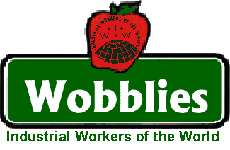

Plates on the Roof: IU640 Stories of Radical Hotel and Restaurant Workers
This page documents actions IU640 has participated in over the years. This is also where we document the cultural talents of hotel and restaurant workers
Restaurant Direct Action in the '20s
The following is a true story from a long time IWW activist. Negotiations with the boss had failed and the workers had gone out on a strike.
"The direct action tactics of the IWW (were often clever and even amusing)... IWW strikers got quick results organizing the staff from the inside. Wobblies whom the employer did not know, hired out as "strikebreakers". No sooner did the "strikebreakers" begin to serve lunch than strange "accidents" began to happen: a waiter "accidentally spilled a bowl of soup on a tablecloth, hamburgers were "mistakenly" fried in fish oil, coffee was flavored with soap suds, sugar dispensers were packed with salt, full meals were marked on the tab as coffee and cake, etc. The "strikebreakers" were fired immediately after lunch and the victorious strikers returned."
--Sam Dolgoff from "Fragments"
Revenge Plus! - 1980s
In a tavern where I worked, the owners' wife came in one Friday night, apparently with the idea of helping out. She was howling drunk and was no help at all, but always in the way. The waitress on the floor was doing a good job without help. She was a very good waitress, much loved by our beery customers, sort of a brassy type that took no shit from nobody and was consistently funny in her responses and her ways of keeping the customers in line. The boss's wife was not much of a waiter at her best and as the evening wore on, and as we worked around her and politely ignored her, she became more angry and more jealous of this popular, competent waitress.
The end result was the boss's wife finally exploded, had a screaming fit, and fired the waitress right on the floor in the middle of a busy Friday night crowd. We hoped the boss would straighten out the following day, but he didn't.
The waitress was understandably furious, and called me up for advice. She had decided to take out the front windows, simple revenge, but asked if I had any other ideas. I suggested that she could get a harsher revenge more safely, and do the rest of us who were still there a favor at the same time by ratting the place off to every possible agency that inspects bars and restaurants. I was primarily thinking about the unsafe basement stair we all fell down, the dysfunctional fire exit, but there were other things. There always are. And the workers always know about them. the upshot was that she made a few anonymous phone calls and the inspectors came rolling in. She didn't get her job back, but she didn't want it back. The back stairs got fixed and, the fire exit got fixed, along with many thousands of dollars worth of other improvements. She got her revenge and the owners got a large financial rebuke.
The next Friday and Saturday, we ran an unadvertised special. Anyone who asked where the waitress was and why she wasn't there got to drink free all night. The beer really flowed. Nobody ever got in trouble over this incident. It was never mentioned, and we didn't see the boss's wife again for about a year. I felt some qualms about suggesting the use of these Governmental agencies, but they were tools at hand.
Applebee's Coffee-In U.S.A - 1997
In an Applebee's Restaurant in New Orleans, a bunch of workers formed an IWW branch and decided to go for a union election through the government. We filed for a petition and the election was set for about a month away. During that month the boss started to hold mandatory anti-union meetings. One of the ways we protested this was by calling a coffee set-in. What we did was got all our friends and every progressive group in the area to come to our coffee set in. They came in on a Saturday night right before the rush and would occupy a table and only order coffee. While we were doing this in New Orleans, it was happing in over a dozen cities around the country where other Wobs would go in to the local Applebee's and do a "coffee-in". This really boosted the morale for our side. Though in the end we lost the election.
Garnish-In! - 1998
Austin IWW has had a presence in one restaurant and one cafe. **** was a nice restaurant with perhaps 15 employees. Our first member there was a cook. He got several waitresses and dishwashers to join. It was long enough that I don't remember everything, but I do remember that they had one major victory. The cooks held a "day without garnish." There was nothing wrong with the food, but it was ugly. The owner got very upset and demanded to know what was going to in the kitchen. The cooks demanded that everyone get free shift meals and the workers get control of the schedule. They got both. They were never formally recognized as a union, but I don't think they ever demanded that.
Mallory Hotel Strike - October 30. 1999: IWW calls solidarity actions for Mallory Hotel Strikers.
(Presented for historical reasons.) - 11 workers organizing with the assistance of the Industrial Workers of the World are on an Unfair Labor Strike at the Portland landmark, Mallory hotel.
The 11 stopped work in response to ongoing arbitrary firings and unreasonable management procedures. The 11 workers asked for a written grievance procedure. Even though such activity is protected by the National Labor Relations Act the owner, Albert Gentner fired all 11 workers.
The workers are asking for:
- An end to unjust and arbitrary firings.
- Establishment of a grievance procedure that includes employee representation.
- Immediate reinstatement for all illegally fired workers.
- Amnesty for all workers participating in and supporting the actions. The workers are calling for a boycott of the Mallory Hotel until this dispute is resolved.
Nevada Brothels help Waitresses - 2000
This isn't a IU640 action, but we think it's pretty creative.
Brothel Helping Cocktail Waitress
RENO, Nev. (AP) _ Cocktail waitresses protesting dress codes and makeup requirements at Nevada casinos are enlisting one of the state's most notorious industries to help make their point.
They say casino guidelines requiring high heels, makeup, styled hair and an overall appealing appearance are more restrictive than those at area brothels.
"How bad is the casino industry when the job requirements of a prostitute are more humane and less degrading than those for cocktail servers and bartenders?" said Kricket Martinez, a casino worker and organizer for the Nevada Alliance for Workers' Rights.
The nonprofit group of union workers and other activists planned to rally Friday in front of Harrah's Reno to protest the policies and compare them to those of the Moonlite Bunny Ranch, a brothel whose owner calls himself the "pimpmaster general of America."
A Harrah's spokeswoman bristled at the comparison.
"As a female and an employee of Harrah's Entertainment Inc., I am appalled and deeply offended that someone would draw a comparison between employees of the Bunny Ranch and employees of our beverage department," Kerri Garcia said Thursday.
At Harrah's, the requirements include: lip color and makeup applied neatly in complementary colors; shoes with a minimum 1-inch heel; and hair that's teased, curled or styled. Workers also must be "well-groomed, appealing to the eye, be firm and body toned."
At the Bunny Ranch in nearby Dayton, Nev., owner Dennis Hof said makeup is optional, and hair must be clean. Jeans are not allowed, nor are bare feet or house slippers. Everything else goes.
"I don't sell anything else but sex - and yet I'm not concerned about makeup," Hof said. "Harrah's is not selling sex but they want their girls to be all made up."
The protesters are initially targeting Harrah's because it fired bartender Darlene Jespersen in August for refusing to wear makeup.
"I'm hoping Harrah's will take notice and realize how much they exploit women," said Jespersen, 45.
Jespersen said she worked at Harrah's without makeup for 20 years. She filed a discrimination complaint with the Nevada Equal Rights Commission, which is investigating.
She has since been offered her job back, but declined pending the outcome of the commission's review. Commission officials said they cannot comment on Jespersen's case.
"They single out women and tell them how to dress but they don't do it to men who are doing the same jobs," she said. "What does makeup have to do with mixing drinks?"
Garcia said Harrah's beverage staff has the lowest turnover rate among any department in all of Harrah's Entertainment Corp. and its 21 properties nationwide.
"I think that's a good sign of employee satisfaction. And the Reno beverage department has the highest customer service rating in the entire company," she said.
Martinez, who works at Circus-Circus, helped lead rallies earlier this year as part of the worker alliance's Kiss My Foot Campaign aimed at reversing casino requirements that waitresses wear high heels.
"Female employees are pieces of meat put on display for male customers," she said. "Harrah's might as well put a sign saying, 'Our goal is to hire only firm, young bodies, and fire anyone who doesn't have one.'"
A Small Action in New Orleans - 2001
I was involved in my First concerted action, where the workers won. For those that don't know me, I work in a restaurant in New Orleans.
Last night a customer wanted breakfast. Which we serve during breakfast hours and at other times when it's not too busy. The waitress Ann asked the kitchen if they could do it, which they felt they were not ready. Then Ann went back to the table and told the table that they couldn't do it. The woman customer started screaming at Ann. Ann told the women that she couldn't talk to her that way and walked away from the table, then told the manager Tom, what happened. Tom when to the table and after talking came away from the table.
I asked Tom if he wanted me to take the table because I knew they liked me, so maybe I could smooth things over. Tom said yes and gave me the order, which was a breakfast order. I asked Tom if he was sure he wanted to reward a customer that threw a fit to get her way. He said do it, so I did. Ann was really mad that Tom took the order, as was the other waitress and the bartender (who is a Wob).
I went to the kitchen and the cook, Mike, was refusing to cook the order because the customers threw a fit. He didn't feel it was right. The manager told him to go home.
I was at a conflict. I kind of like this manager, though many of my co-workers do not. I did think he made a bad call though. Mike was about to walk out and I asked him to stay.
I asked the other front of house staff what did we want to do. It looked like people were going to be mad and maybe one was going to quit right then, but no concerted action. I said the cook was going to be disciplined because he stood by Ann, thus we needed to stand by the cook.
We decided that we would demand as a group that Mike be able to come back on the clock. Tom looked taken away by the fact that we all showed solidarity. I told him that we felt he was making a bad decision and wanted the cook back on. Tom didn't argue. I told Mike he could come back on the clock, but he didn't want to.
I explained that he was not being asked by Tom to come back on the clock, in fact it's against his will. It was we, he fellow workers that was asking him to come back on the clock. He agreed, but said not until Tom stopped cooking the breakfast order. After a little talking to I got him to agree to come back on after Tom was done the order.
I went back to Tom and told him the situation and he agreed. It was rather amazing. Tom apologized to Ann and Mike for making to wrong call. I couldn't believe it. I wish I could Figure a way to keep that kind of solidarity going for other issues.
Even though this was a small action, it's the First time I was involved in a clear victory and I wanted to share it with my fellow workers.